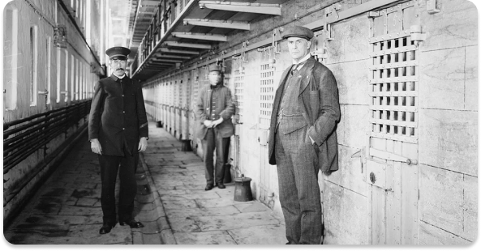
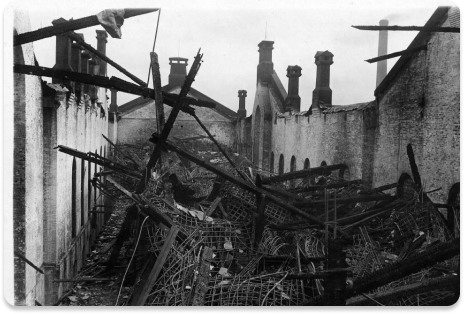
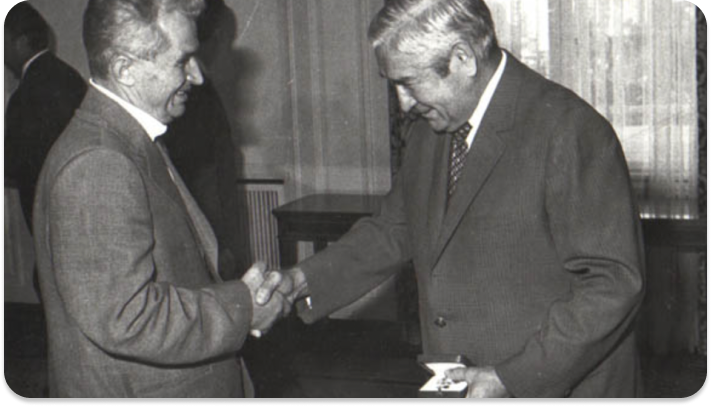
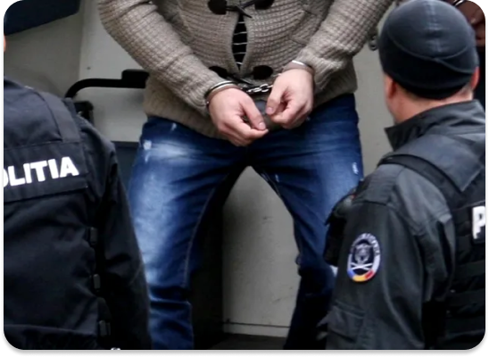
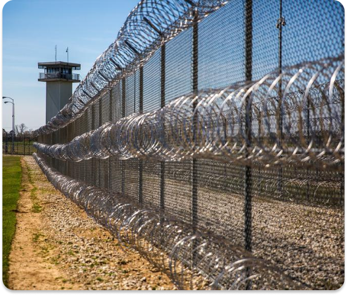

Scurt Istoric
La cererea regelui Mihai I, a fost construit penitenciarul ... dedicat prizonierilor celui de al 2-lea Razboi Mondial. Astfel, dupa eforturi colosale din partea muncitorilor, in anul 1943 inchisoarea a fost terminata.
Penitenciarul ... intra in renovari dupa ce a fost afectat de cutremurul din acelasi an cu o magnitudine de 7.1 pe scara Richter ce a starnit eventual si un incendiu. Acoperisul si o parte din peretii exteriori au fost grav afectati, astfel incat s-a cerut mutarea imediata si temporara a detinutilor in cel mai apropiat penitenciar.
Penitenciarul ... a primit unul dintre cele mai mari premii pentru demonstrarea de-a lungul anilor a unei securitati stricte in incinta, fiind recunoscut la nivel global. Inmanarea a fost facuta de insusi Nicolae Ceausescu.
A fost inregistrata prima tentativa de evadare din partea unui detinut ce a fost plasat in penitenciarul nostru in 2006. Din fericire, paznicii au fost agili, reusind astfel sa captureze fugarul. Acesta a declarat faptul ca, urmarind serialul nou aparut “Prison Break”, a incercat o evadare ca in filme.
Ne putem lauda cu faptul ca din anul constructiei inchisorii (1943), nici un detinut nu a reusit sa evadeze. Mai mult, in anul 2015 a fost construita o noua cladire ce a reusit dublarea capacitatii totale. Astfel, ramanem deschisi la orice propunere de retinere a unui individ periculos pentru societate.
